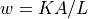
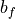
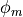
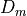
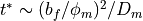
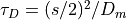
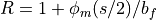

pydfnworks: dfnGraph
DFN Class functions used in graph analysis and pipe-network simulations.
The pydfnworks.dfnGraph package is organized into subpackages:
construction– build intersection, fracture, and bipartite graphs from a DFN and attach source/target nodes.attributes– edge permeability, area, and conductance (weight) models.flow– steady-state pressure-driven flow on the graph and post-processing metrics.transport– particle tracking on the graph, including time domain random walk (TDRW) matrix diffusion models.algorithms– pruning and graph deconstruction.io– reading, writing, and plotting graphs.
All public functions are re-exported from pydfnworks.dfnGraph so from pydfnworks.dfnGraph import <name> keeps working. The functions below are also methods of the DFN object, e.g., G = DFN.create_graph('intersection', 'left', 'right').
General Graph Functions
- create_graph(self, graph_type, inflow, outflow)[source]
Header function to create a graph based on a DFN. Particular algorithms are in files.
- Parameters:
self (object) – DFN Class object
graph_type (string) – Option for what graph representation of the DFN is requested. Currently supported are fracture, intersection, and bipartitie
inflow (string) – Name of inflow boundary (connect to source)
outflow (string) – Name of outflow boundary (connect to target)
- Returns:
G – Graph based on DFN
- Return type:
NetworkX Graph
Notes
- add_fracture_source(self, G, source)[source]
- Parameters:
self (object) – DFN Class
G (NetworkX Graph) – NetworkX Graph based on a DFN
source_list (list) – list of integers corresponding to fracture numbers
remove_old_source (bool) – remove old source from the graph
- Returns:
G
- Return type:
NetworkX Graph
Notes
bipartite graph not supported
- add_fracture_target(self, G, target)[source]
- Parameters:
self (object) – DFN Class
G (NetworkX Graph) – NetworkX Graph based on a DFN
target (list) – list of integers corresponding to fracture numbers
- Returns:
G
- Return type:
NetworkX Graph
Notes
bipartite graph not supported
- dump_fractures(self, G, filename)[source]
Write fracture numbers assocaited with the graph G out into an ASCII file inputs
- Parameters:
self (object) – DFN Class
G (NetworkX graph) – NetworkX Graph based on the DFN
filename (string) – Output filename
Notes
- plot_graph(self, G, source='s', target='t', output_name='dfn_graph')[source]
Create a png of a graph with source nodes colored blue, target red, and all over nodes black
- Parameters:
self (object) – DFN Class
G (NetworkX graph) – NetworkX Graph based on the DFN
source (node) – Starting node
target (node) – Ending node
output_name (string) – Name of output file (no .png)
Notes
Image is written to output_name.png
Graph Pruning
- current_flow_threshold(self, G, source='s', target='t', weight=None, thrs=0.0)[source]
Runs current flow (Potential drop between source and target) on the Graph G, and returns a subgraph such that the current on the edges is greater than the threshold value (thrs).
- Parameters:
self (object) – DFN Class
G (NetworkX Graph) – NetworkX Graph based on a DFN
source (node) – Starting node
target (node) – Ending node
weight (string) – Resistance term used in the solution of Laplace’s Equation
thrs (float) – Threshold value for pruning the graph
- Returns:
H – Subgraph such that the current on the edges is greater than the threshold value
- Return type:
NetworkX graph
Notes
Graph attributes (node and edge) are not retained on the subgraph H.
- k_shortest_paths_backbone(self, G, k, source='s', target='t', weight=None)[source]
Returns the subgraph made up of the k shortest paths in a graph
- Parameters:
self (object) – DFN Class
G (NetworkX Graph) – NetworkX Graph based on a DFN
k (int) – Number of requested paths
source (node) – Starting node
target (node) – Ending node
weight (string) – Edge weight used for finding the shortest path
- Returns:
H – Subgraph of G made up of the k shortest paths
- Return type:
NetworkX Graph
Notes
See Hyman et al. 2017 “Predictions of first passage times in sparse discrete fracture networks using graph-based reductions” Physical Review E for more details
- greedy_edge_disjoint(self, G, source='s', target='t', weight='None', k='')[source]
Greedy Algorithm to find edge disjoint subgraph from s to t. See Hyman et al. 2018 SIAM MMS
- Parameters:
self (object) – DFN Class Object
G (NetworkX graph) – NetworkX Graph based on the DFN
source (node) – Starting node
target (node) – Ending node
weight (string) – Edge weight used for finding the shortest path
k (int) – Number of edge disjoint paths requested
- Returns:
H – Subgraph of G made up of the k shortest of all edge-disjoint paths from source to target
- Return type:
NetworkX Graph
Notes
Edge weights must be numerical and non-negative.
See Hyman et al. 2018 “Identifying Backbones in Three-Dimensional Discrete Fracture Networks: A Bipartite Graph-Based Approach” SIAM Multiscale Modeling and Simulation for more details
Graph-Based Flow
- run_graph_flow(self, inflow, outflow, pressure_in, pressure_out, fluid_viscosity=0.00089, phi=1, G=None, graph_flow_name='graph_flow.hdf5', conductance_model='doolaeghe', diameter_from='area', simplify=False, **conductance_kwargs)[source]
Solve for pressure driven steady state flow on a graph representation of the DFN.
- Parameters:
self (object) – DFN Class
inflow (string) – name of file containing list of DFN fractures on inflow boundary
outflow (string) – name of file containing list of DFN fractures on outflow boundary
pressure_in (double) – Value of pressure at inlet [Pa]
pressure_out (double) – Value of pressure at outlet [Pa]
fluid_viscosity (double) – optional, default is for water. [Pa*s]
phi (double) – Fracture porosity, default is 1 [-]
G (Input Graph)
conductance_model (string) – edge conductance model, ‘doolaeghe’ (default) or ‘karra’. See pydfnworks.dfnGraph.attributes.conductance.
diameter_from (string) – fracture-diameter source for the ‘doolaeghe’ model: ‘area’ (default, area-equivalent 2*sqrt(surface_area/pi)) or ‘max_radius’ (2*self.radii[:, 2]).
simplify (bool) – if True, remove crossing (redundant) edges per fracture via the Doolaeghe et al. (2021) deconstructed-graph method.
**conductance_kwargs – forwarded to the conductance model (e.g. B, mp_correction=’additive’).
- Returns:
Gtilde – Gtilde is a directed acyclic graph with vertex pressures, fluxes, velocities, volumetric flow rates, and travel times
- Return type:
NetworkX graph
- compute_dQ(self, G)[source]
Computes the DFN fracture intensity (p32) and flow channeling density indicator from the graph flow solution on G
- Parameters:
self (object) – DFN Class
G (networkX graph) – Output of run_graph_flow
- Returns:
p32 (float) – Fracture intensity, reported in the convention set by DFN.params[‘p32_convention’] (0: double-sided / wetted surface area, default. 1: single-sided)
dQ (float flow channeling density indicator)
Notes
dQ is always computed with the double-sided (wetted) surface area, as defined in the reference below, and does not depend on p32_convention.
For definitions of p32 and dQ along with a discussion see “ Hyman, Jeffrey D. “Flow channeling in fracture networks: characterizing the effect of density on preferential flow path formation.” Water Resources Research 56.9 (2020): e2020WR027986. “
Edge Conductance Models
The edge weight used in the graph Laplacian is the hydraulic conductance of the fracture surface represented by that edge. run_graph_flow selects the model with conductance_model:
'doolaeghe'(default since v2.12) – the size-aware trapezoid conductance of Doolaeghe et al. (2020) with a correction for the redundant paths formed by fractures with many intersections. The fracture diameter comes fromdiameter_from='area'(area-equivalent, default) or'max_radius'. Extra keyword arguments are forwarded to the model:B– close-intersection coefficient, default 1.5.mp_correction– multiple-paths correction:'divide'(default, Doolaeghe et al. 2020),'additive'(adapted from Doolaeghe et al. 2021), or'none'.
'karra'– the model of Karra et al. (2018),
. This was the default before v2.12; passconductance_model='karra'to reproduce earlier results.
Setting simplify=True removes redundant crossing edges on each fracture with the deconstructed-graph method of Doolaeghe et al. (2021) before the flow solve.
G = DFN.create_graph("intersection", "left", "right")
H = DFN.run_graph_flow("left", "right", 2e6, 1e6, G=G,
conductance_model="doolaeghe", mp_correction="divide")
The edge weight used by the graph-flow Laplacian is the hydraulic
conductance of the fracture flowing surface represented by that edge.
add_weight dispatches to a selectable model:
"doolaeghe"– Doolaeghe et al. (2020) size-aware trapezoid conductance with the multiple-paths correction. This is the default used byDFN.run_graph_flow."karra"– Karra et al. (2018),w = K*A/L. This is the default ofadd_weightwhen it is called directly, and was therun_graph_flowdefault before v2.12.
- add_weight(G, model='karra', **model_kwargs)[source]
Assign edge conductance (‘weight’) to every edge using the chosen model.
- Parameters:
G (NetworkX Graph) – networkX graph
model (str) – Conductance model name. Default ‘karra’ (Karra et al. 2018,
w = K*A/L). SeeCONDUCTANCE_MODELSfor the registry.**model_kwargs – forwarded to the model (e.g. B, mp_correction for ‘doolaeghe’).
- Return type:
None
Graph-Based Transport
- run_graph_transport(self, G, nparticles, partime_file, frac_id_file=None, format='hdf5', initial_positions='uniform', dump_traj=False, tdrw_flag=False, tdrw_model='infinite', matrix_porosity=None, matrix_diffusivity=None, fracture_spacing=None, tdrw_filename=None, control_planes=None, direction=None, cp_filename='control_planes')[source]
Run particle tracking on the given NetworkX graph
- Parameters:
self (object) – DFN Class
G (NetworkX graph) – obtained from graph_flow
nparticles (int) – number of particles
initial_positions (str) – distribution of initial conditions. options are uniform and flux (flux-weighted)
partime_file (string) – name of file to which the total travel times and lengths will be written for each particle
frac_id_file (string) – name of file to which detailed information of each particle’s travel will be written
dump_flag (bool) – on/off to write full trajectory information to file
tdrw_flag (Bool) – if False, matrix_porosity and matrix_diffusivity are ignored
tdrw_model (string) – Matrix diffusion model. Options: ‘infinite’ (default, unlimited block size), ‘roubinet’, ‘dentz’, ‘annulus’ (finite block size), or ‘from_file’ (return-time CDF read from tdrw_filename).
matrix_porosity (float) – Matrix Porosity used in TDRW
matrix_diffusivity (float) – Matrix Diffusivity used in TDRW (SI units m^2/s)
fracture_spacing (float) – distance between adjacent parallel fractures [m]; the matrix block half-width is fracture_spacing/2. Required for all finite tdrw models
tdrw_filename (string) – path to a two-column ASCII file (return times, CDF). Required when tdrw_model is ‘from_file’
control_planes (list of floats) – list of control plane locations to dump travel times. Only in primary direction of flow.
direction (primary) – string indicating primary direction of flow
- Returns:
particles – list of particles objects
- Return type:
list
Notes
Information on individual functions is found therein
Particle trajectories are seeded from DFN.params['seed'], so repeated runs with the same seed give the same particle paths. See seed.
Matrix Diffusion (TDRW)
Setting tdrw_flag=True adds matrix diffusion to graph transport with a time domain random walk. Each particle’s time on a fracture is increased by a random trapping time in the surrounding rock matrix. matrix_porosity and matrix_diffusivity [m2/s] are required. tdrw_model selects the matrix geometry:
|
Description |
|---|---|
|
Default. Diffusion into a semi-infinite matrix (unlimited block size). |
|
Finite slab between parallel fractures. Return times are sampled from the first-passage time distribution of diffusion in a slab, inverted from the Laplace domain with the Stehfest algorithm. |
|
Finite annular (cylindrical) matrix block, also inverted from the Laplace domain with Stehfest. |
|
The limited-block model used before v2.12 (Roubinet et al.). |
|
User-supplied return-time CDF. |
All finite models (dentz, annulus, roubinet, from_file) require fracture_spacing [m], the distance between adjacent parallel fractures. The matrix block half-width is fracture_spacing/2. If fracture_spacing is given and tdrw_model is left at 'infinite', the 'dentz' model is used and a message is written to the log.
particles = DFN.run_graph_transport(H, nparticles=10**5,
partime_file="partime.dat",
tdrw_flag=True,
matrix_porosity=0.005,
matrix_diffusivity=1e-13,
tdrw_model="dentz",
fracture_spacing=1.0)
Three timescales describe the effect of a finite matrix block with half-aperture

, matrix porosity
, and diffusivity
:departure from advective transport:

finite-block cutoff:

, where is the fracture spacingequilibrium retardation:

See examples/tdrw and examples/finite_matrix_diffusion for complete workflows.